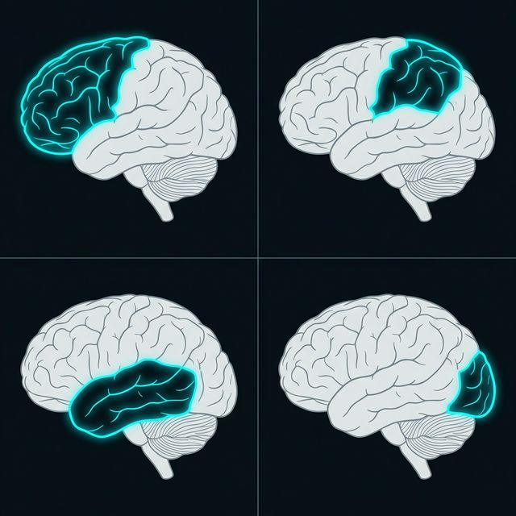
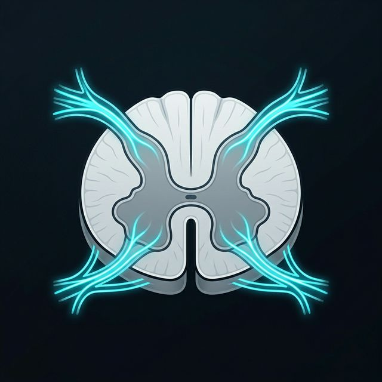

Frontal
Parietal
Temporal
Oksipital
Büyük Beyin & Serebral Korteks İşlevleri
1200-1500g / %20 Enerji
~1 Trilyon Hücre
Frontal Lob
Serebrum'un en büyük bölümüdür; planlama, karar verme gibi yürütücü işlevleri, kişilik ve bilinçli hareketleri yönetir.
Parietal Lob
Dokunma, ağrı, sıcaklık verilerini işler; nesneleri ve vücudun uzaydaki yerini anlamayı sağlayan "bedensel haritayı" tutar.
Temporal Lob
Seslerin işlenmesi ve konuşmayı anlamaktan sorumludur. Hafıza oluşumunda kritik olan hipokampüs bu lobun altındadır.
Oksipital Lob
Tamamen görsel işlemeye odaklıdır; ham sinyalleri renk, şekil ve hareket bilgisine dönüştürerek anlamlandırır.

40-50 cm
2.2 Omurilik (Veri Aktarım Otoyolu)
İletim Terminali
MTS ile çevre arasında otoyol görevi görerek motor komutları ve duyusal verileri çift yönlü, kesintisiz bir biçimde iletir.
Kök Yapısı:
Dorsal: Duyusal Girişi / Ventral: Motor Çıkışı sağlar.